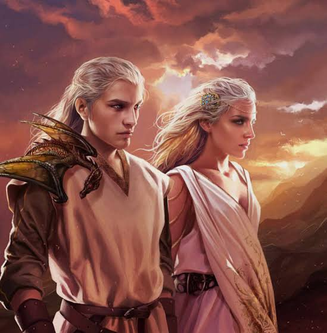

Valíria, também chamada de Velha Valíria, é uma cidade em ruínas de Essos. No passado, foi uma vibrante cidade e capital do poderoso Império Valiriano.
Os valirianos são famosos por seus cabelos prateados e dourados, e seus olhos violeta, roxos ou púrpura, essas características não são encontradas em nenhuma outra raça de humanos no Mundo Conhecido. Seus cabelos podem variar desde o branco, até o prata, dourado ou loiro.